Top 5 National Parks for First-Time Visitors
Planning your first safari? Here are the must-visit national parks that offer incredible wildlife viewing and breathtaking scenery...
Read More
Welcome to Webrayz, your trusted partner for exploring Kenya's breathtaking landscapes. We specialize in providing safe, comfortable, and reliable transport solutions for solo travelers, families, and groups.
Whether you're heading to the pristine beaches of the coast or the rugged terrains of our national parks, our fleet is equipped to handle the journey while ensuring your comfort.
Our transport services are designed for every type of explorer. Whether it's a thrilling safari, a city tour, or a relaxing beach transfer, we have you covered.
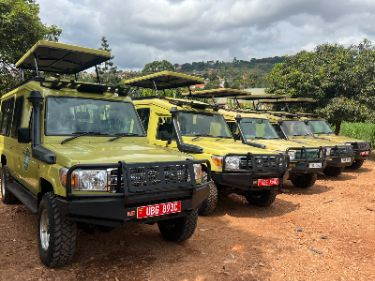
Off-road vehicles for game drives in parks like Tsavo, Serengeti crossings, or birdwatching at Rift Valley lakes. Includes pick-up from hotels/airports.
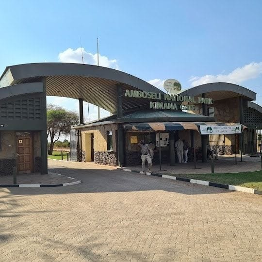
Create your own itinerary and explore destinations at our own pace wuth our flexible transport options
Reliable pick-up and drop-off services from major airports to your hotel or residence, ensuring a smooth start and end to your journey.
Comfortable transport solutions for tour groups,families , schools and corporate trips.
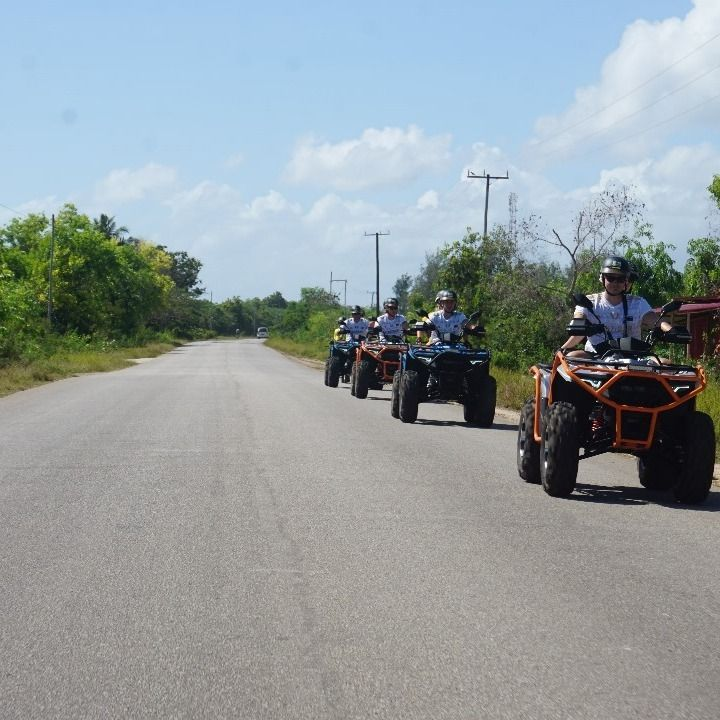
Perfect transport for explores visiting remote destinations,natures and parks and adventure sports
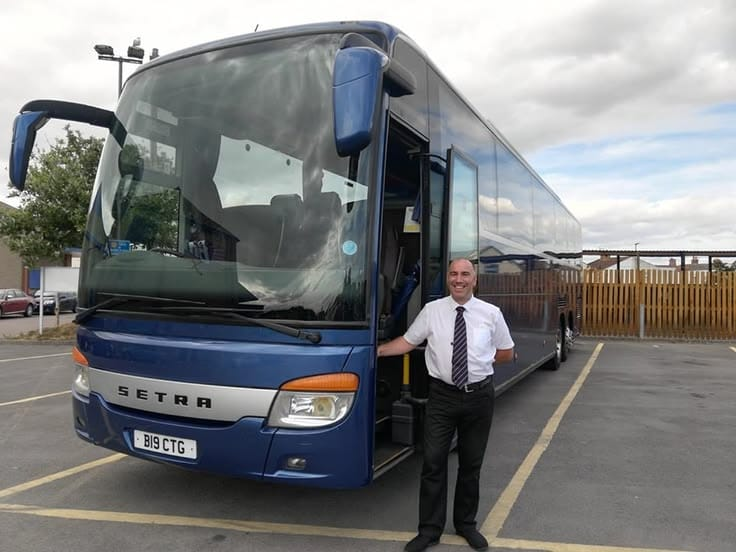
Travel to popular attractions, antional parks, beaches and cultural sites with our experienced drivers.
Explore the most sought-after locations in Kenya, from the vast plains of the Maasai Mara to the white sandy beaches of Diani.
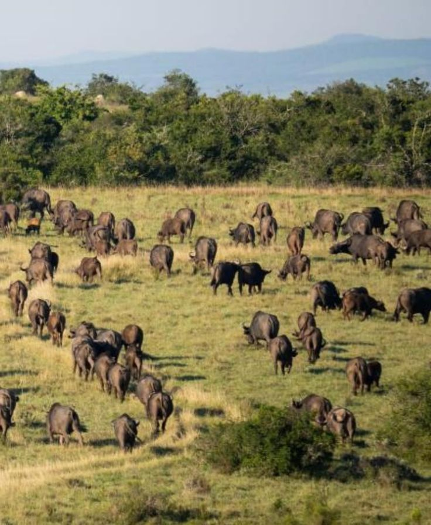
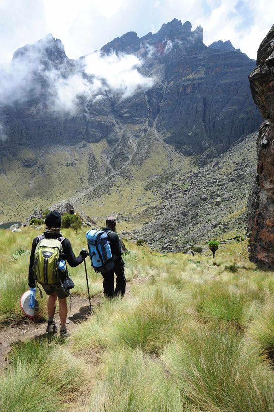
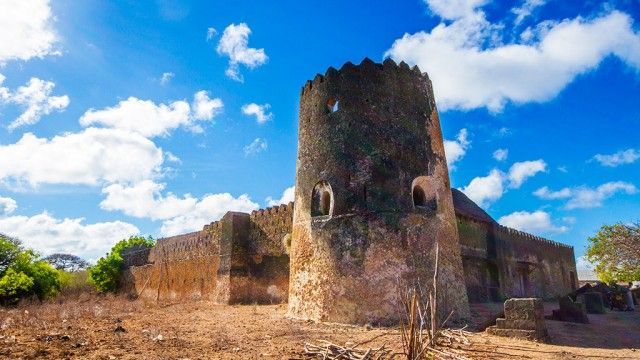
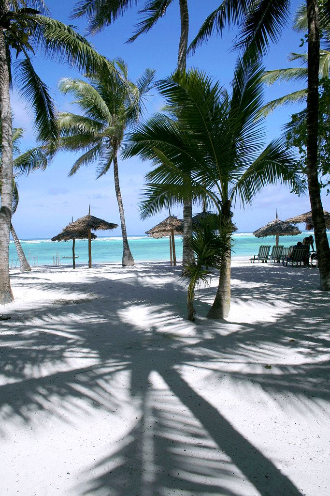
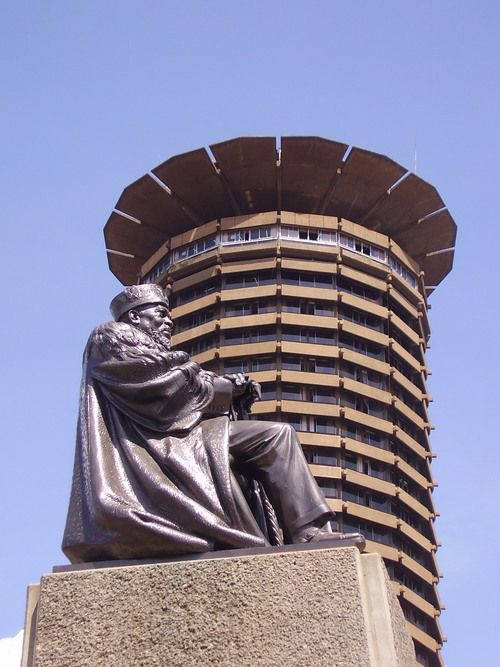
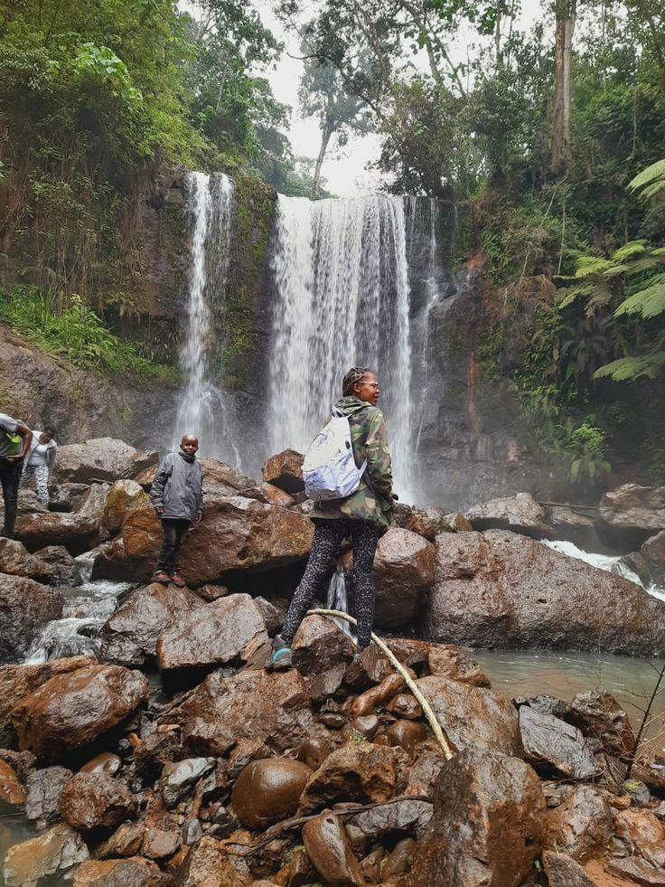
Get the latest travel tips, destination guides, and stories from our adventures across Kenya.
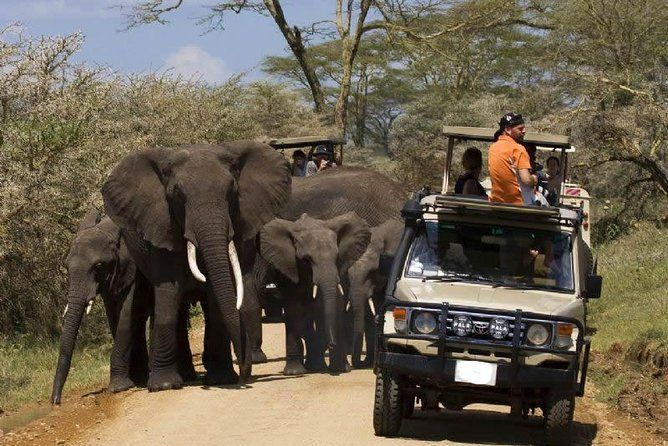
Planning your first safari? Here are the must-visit national parks that offer incredible wildlife viewing and breathtaking scenery...
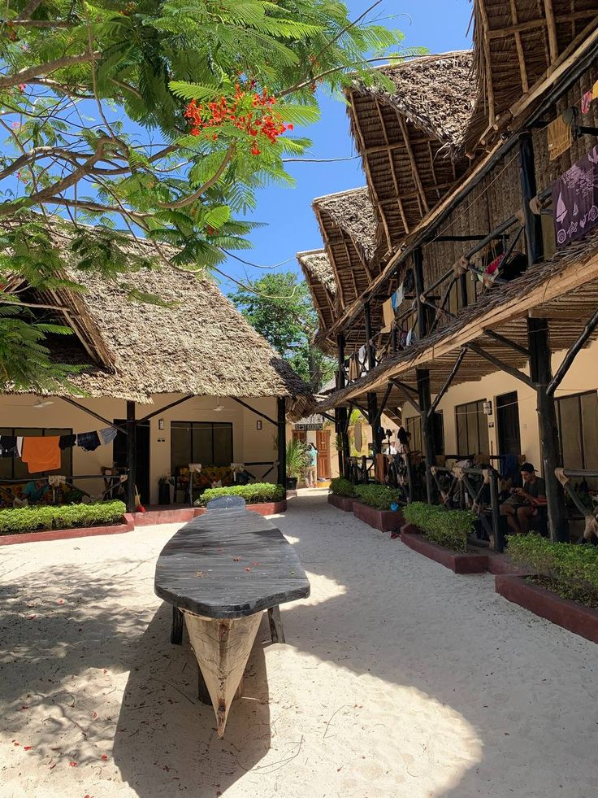
Beyond the beaches, Kenya's coast is rich with history and culture. Discover the charm of towns like Lamu and Malindi...
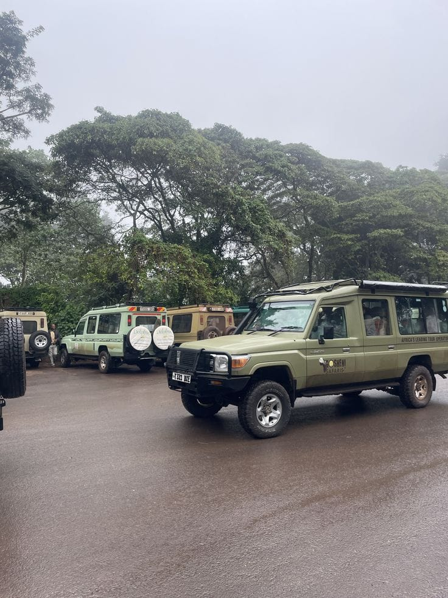
Not sure what to pack? Our essential guide covers everything you need for a comfortable and safe safari adventure...